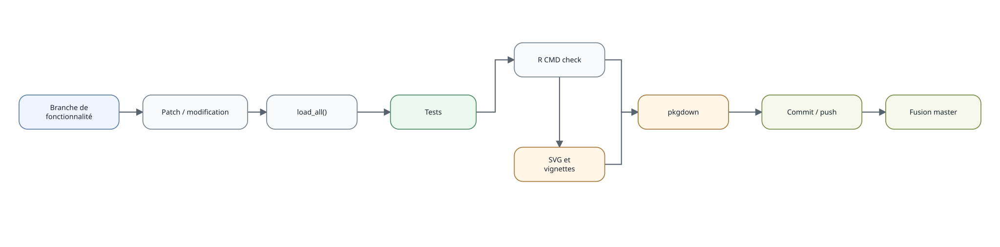
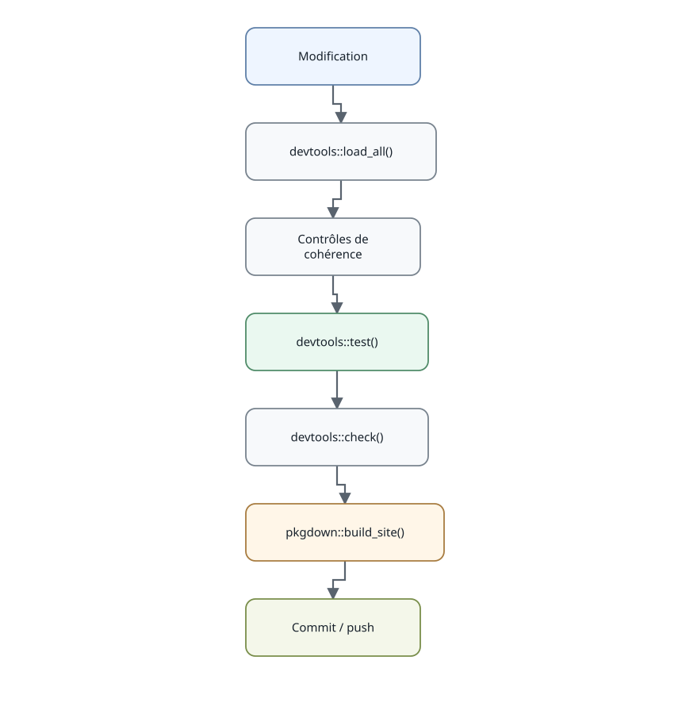

Développement et contrôles
developpement.RmdLe développement de eduschool suit une chaîne courte :
chargement du code, tests, contrôle du package, régénération éventuelle
des visuels puis construction du site pkgdown.

Workflow de développement de eduschool
Les contrôles détaillés du package sont résumés ci-dessous.

Chaîne de tests et de contrôles
Les SVG sont pré-générés et versionnés. Ils peuvent être reconstruits directement en R après modification des modèles graphiques avec :
La génération est native et ne dépend ni de Mermaid, ni de Node.js, ni de npm. Les mêmes graphes internes servent aux sorties SVG et HTML.